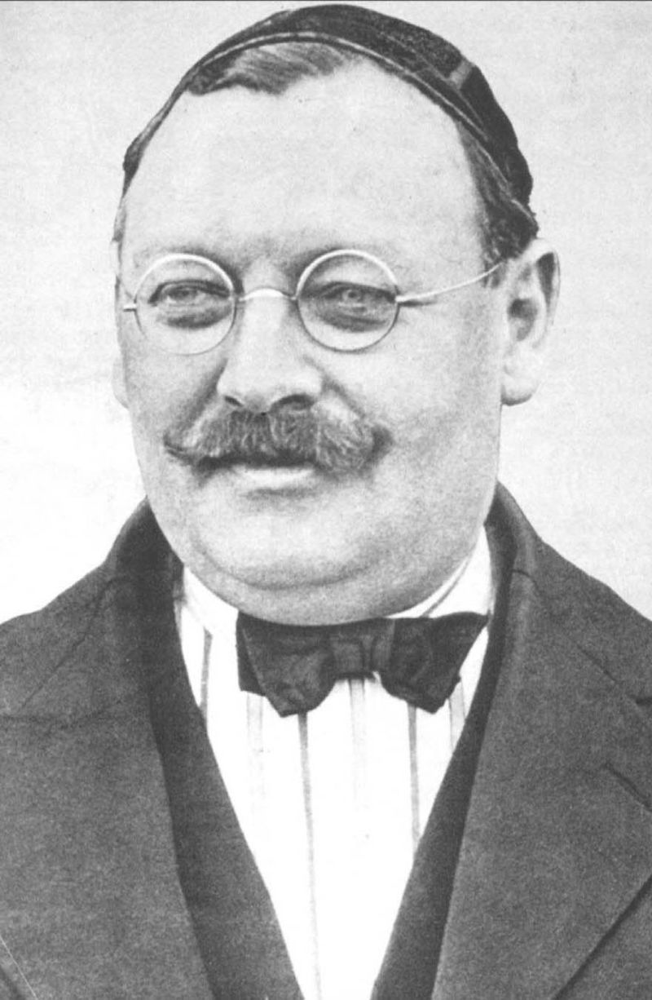

Hobby FCBarcelona club
Beginnings of Football Club Barcelona (1899–1922)
On 22 October 1899, Joan Gamper placed an advertisement in Los Deportes declaring his wish to form a football
club; a positive response resulted in a meeting at the Gimnasio Solé on 29 November. Eleven players attended:
Walter Wild (the first director of the club), Lluís d'Ossó, Bartomeu Terradas, Otto Kunzle, Otto Maier, Enric
Ducal, Pere Cabot, Josep Llobet, John Parsons and William Parsons. As a result, Football Club Barcelona was born.
The blue and red colours of the shirt were first worn in a match against Hispania in 1900; the prevailing
Catalonia conception is that the colours were chosen by Joan Gamper and are those of his home team, FC Basel.
Gamper's advertisement in Los Deportes, requesting players for the team that later became the Futbol Club
Barcelona.
Ricardo Zamora played for Barcelona from 1919 to 1922.
FC Barcelona quickly emerged as one of the leading clubs in Spain, competing in the Campeonato de Cataluña and the
Copa del Rey. In 1902, the club won its first trophy, the Copa Macaya, and also played in the first Copa del Rey
final, losing 2–1 to Bizcaya.
In 1908, Joan Gamper became club president for the first time to save the club from bankruptcy. The club had not
won since the Campeonato de Cataluña in 1905; this caused their financial trouble. One of his main achievements
was to help Barcelona acquire its own stadium and thus achieve a stable income.
On 14 March 1909, the team moved into the Camp de la Indústria, a stadium with a capacity of 8,000. To celebrate
their new surroundings, a logo contest was held the following year. Carles Comamala won the contest, and his
suggestion became the crest that the club still wears as of 2012, with some minor changes.
With the new stadium, Barcelona participated in the inaugural version of the Pyrenees Cup, which, at the time,
consisted of the best teams of Languedoc, MIDI and Aquitaine (Southern France), the Basque Country and Catalonia;
all were former members of the Marca Hispanica region. The contest was generally considered the most prestigious
in that era. From the inaugural year in 1910 to 1913, Barcelona won the competition four consecutive times. Carles
Comamala played an integral part of the four-time champion, managing the side along with Amechazurra and Jack
Greenwell. The latter became the club's first full-time coach in 1917. The last edition was held in 1914 in the
city of Barcelona, which local rivals Espanyol won.
During the same period, the club changed its official language from Castilian to Catalan and gradually evolved
into an important symbol of Catalan identity. For many fans, participating in the club had less to do with the
game itself and more with being a part of the club's collective identity. On 4 February 1917, the club held its
first testimonial match to honour Ramón Torralba who played from 1913 to 1928. The match was against local side
Terrassa, which Barcelona won 6–2.
Gamper simultaneously launched a campaign to recruit more club-members, and, by 1922, the club had more than
20,000, who helped finance a new stadium. The club then moved to the new Les Cortes, which they inaugurated the
same year. Les Cortes had an initial capacity of 22,000, and was later[when?] expanded to 60,000.
Gamper recruited Jack Greenwell as the first full-time manager in Barcelona's history. After he was hired, the
club's fortunes began to improve on the field. During the Gamper-led era, Barcelona won eleven Campeonato de
Cataluña, six Copa del Rey and four Pyrenees Cups and enjoyed its first "golden age".
Barcelona Honours
Domestically, Barcelona has won a record 74 trophies: 26 La Liga, 30 Copa del Rey, 13 Supercopa de España, 3 Copa Eva
Duarte, and 2 Copa de la Liga trophies, as well as being the record holder for the latter four competitions. In
international club football, the club has won 20 European and worldwide titles: 5 UEFA Champions League titles, a
record 4 UEFA Cup Winners' Cup, a joint record 5 UEFA Super Cup, a record 3 Inter-Cities Fairs Cup, and 3 FIFA Club
World Cup.Barcelona was ranked first in the International Federation of Football History & Statistics Club World
Ranking for 1997, 2009, 2011, 2012, and 2015 and currently occupies the third position on the UEFA club rankings.The
club has a long-standing rivalry with Real Madrid, and matches between the two teams are referred to as El Clásico.
Barcelona is one of the most widely supported teams in the world, and the club has one of the largest social media
following in the world among sports teams.Barcelona players have won a record number of Ballon d'Or awards (12), with
recipients including Johan Cruyff, as well as a record number of FIFA World Player of the Year awards (7), with
winners including Ronaldo, Romário, Ronaldinho, and Rivaldo. In 2010, three players who came through the club's youth
academy (Lionel Messi, Andrés Iniesta, and Xavi) were chosen as the three best players in the world in the FIFA Ballon
d'Or awards, an unprecedented feat for players from the same football school. Additionally, players representing the
club have won a record number (8) of European Golden Shoe awards.
Barcelona is one of three founding members of the Primera División that have never been relegated from the top
division since its inception in 1929, along with Athletic Bilbao and Real Madrid. In 2009, Barcelona became the first
Spanish club to win the continental treble consisting of La Liga, Copa del Rey, and the UEFA Champions League, and
also became the first Spanish football club to win six out of six competitions in a single year, by also winning the
Spanish Super Cup, UEFA Super Cup, and FIFA Club World Cup. In 2011, the club became European champions again and won
five trophies. This Barcelona team, which won 14 trophies in just 4 years under Pep Guardiola, is considered by some
in the sport to be the greatest team of all time.By winning their fifth Champions League trophy on 6 June 2015,
Barcelona became the first European club in history to achieve the continental treble twice. The highest paid sports
team in the world, in November 2018 Barcelona became the first sports team with average first-team pay in excess of
£10m ($13.8m) per year.